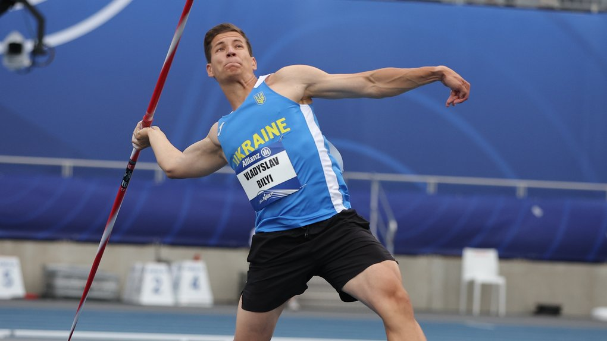
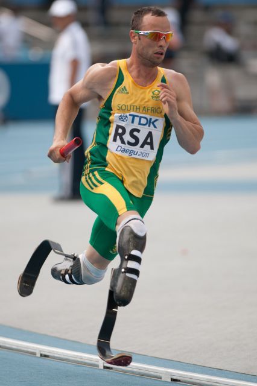

Легка атлетика (Паралімпіада)
Паралімпійська легка атлетика включає різноманітні дисципліни, такі як біг, стрибки, метання диска, списа та штовхання ядра, для спортсменів з різними видами фізичних вад.
Коротка історія паралімпійської легкої атлетики
Легка атлетика була представлена на перших Паралімпійських іграх у Римі в 1960 році і з тих пір є однією з ключових дисциплін.
Класифікація спортсменів
Спортсменів класифікують на різні групи залежно від ступеня інвалідності. Система класифікації дозволяє спортсменам з однаковими порушеннями конкурувати на рівних. Атлети класифікуються на такі групи: 11-13: спортсмени з порушеннями зору 20: спортсмени з інтелектуальними порушеннями 31-38: спортсмени з церебральним паралічем (31-34: на інвалідних візках) 40-46: спортсмени з порушеннями, що впливають на роботу кінцівок та спортсмени з ампутованими кінцівками 51-58: спортсмени на інвалідних візках на треку та спортсмени, що метають з положення сидячи Номери класів також мають префікси «T», «F», «P», відповідно track (доріжки), field (поле) і pentathlon (п'ятиборство). У кожному класі, перша цифра вказує на характер порушення спортсмена, а друга вказує на кількість функціональних можливостей. Наприклад, бігун, що бере участь у класі 11 має або слабкий зір, або взагалі сліпий і використовує допоміжні засоби, щоб закінчити гонку. У той же час спортсмен, що має клас 13 має обмежений зір, але не використовує допоміжних засобів.
Відомі спортсмени
- Оскар Пісторіус (Південна Африка) - відомий бігун на протезах (хоча його кар'єра була контроверсійною).